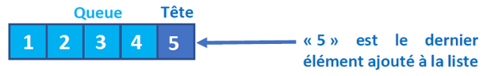
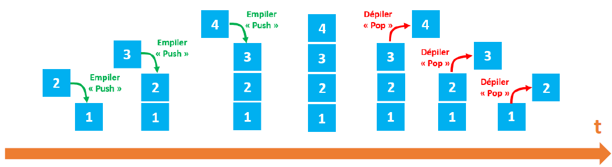
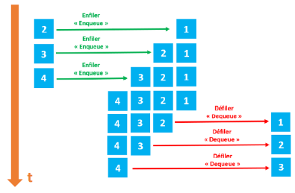
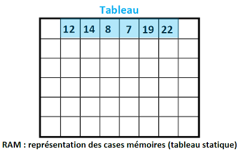
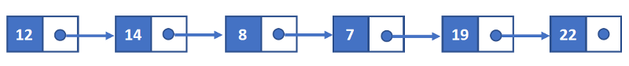
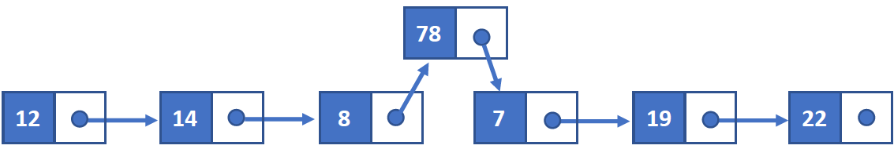
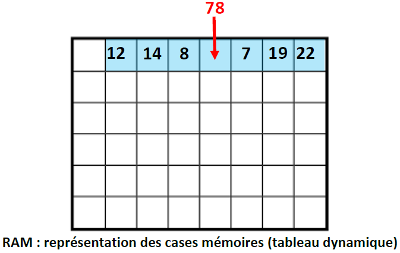
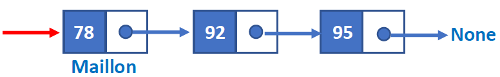
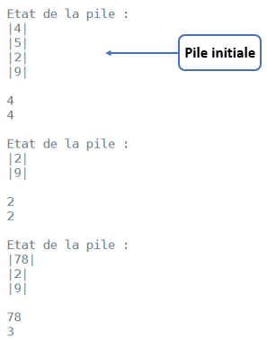
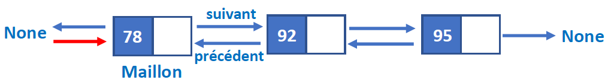

Structures de données linéaires
Généralités
Les structures de données abstraites
Les algorithmes opèrent sur des données qui peuvent être de différentes natures. La première version d'un algorithme est autant que possible indépendante d'une implémentation particulière, c'est-à-dire que la représentation des données n'est pas fixée.
A ce premier niveau, les données sont considérées de manière abstraite, on se donne une notation pour les décrire ainsi que l'ensemble des opérations que l'on peut appliquer et les propriétés de ces opérations.
On parle alors de type abstrait de données.
Pourquoi avoir recours à cette notion de type abstrait ? tout simplement pour définir des types de données non « primitifs », c'est-à-dire non disponibles dans les langages de programmation courants.
Rappel
Les types de données primitifs sont par exemple les entiers, les flottants, les booléens.
Nous étudierons 4 types de structures de données abstraites :
- Les structures linéaires : les listes, les piles et les files.
- Les structures à accès par clé : les dictionnaires.
- Les structures hiérarchiques : les arbres.
- Les structures relationnelles : les graphes.
Les 3 dernières structures seront étudiées dans des chapitres ultérieurs.
Remarque
Ces structures de données sont parfois « prévues » nativement dans les langages de programmation comme type de données mais ce n'est pas toujours le cas !
Une structure de données possède un ensemble de routines (procédures ou fonctions) permettant d'ajouter, d'effacer, d'accéder aux données.
Cet ensemble de routine est appelé interface.
Les opérations élémentaires
L'interface est généralement constituée de 4 routines élémentaires dites CRUD :
- Create : ajout d'une donnée.
- Read : lecture d'une donnée.
- Update : modification d'une donnée.
- Delete : suppression d'une donnée.
Derrière les opérations de lecture, de modification ou de suppression d'une donnée, se cache une autre routine tout aussi importante : la recherche d'une donnée.
Précision
Il faut d'abord trouver la donnée dans la structure avant de pouvoir la lire, la modifier ou la supprimer.
Structures de données linéaires : listes, piles et files
Type abstrait liste
Une liste est une structure abstraite de données permettant de regrouper des données sous une forme séquentielle.
Elle est constituée d’éléments d’un même type, chacun possédant un rang.
Une liste est évolutive : on peut ajouter ou supprimer n’importe lequel de ces éléments.
Une liste L est composée de 2 parties :
- sa tête (souvent noté car), qui correspond au dernier élément ajouté à la liste ;
- sa queue (souvent noté cdr) qui correspond au reste de la liste ;

Le langage de programmation Lisp (inventé par John McCarthy en 1958) a été l’un des premiers langages de programmation à introduire cette notion de liste (Lisp signifie "list processing").
Voici les opérations qui peuvent être effectuées sur une liste :
| Action | Instruction |
|---|---|
Créer une liste L vide |
L = liste_vide() |
Tester si la liste L est vide |
est_vide(L) |
Insérer un élément x dans la liste L à une place p |
inserer_elt(x, p, L) |
Supprimer l'élément situé dans la liste L à la place p |
supprimer_elt(L, p) |
Donner l'élément x situé dans la liste L à la place p |
contenu(L, p) |
Compter le nombre d’éléments dans une liste L |
longueur(L) |
Accéder à un élément x de la liste L en renvoyant sa place |
acces(L, x) |
Exercice 1 ⭐
- Voici une série d'instructions (les instructions ci-dessous s'enchaînent), expliquer ce qui se passe à chacune des étapes :
🐍 Script Python
L = liste_vide() inserer_elt('A', 1, L) inserer_elt('O', 2, L) inserer_elt('B', 1, L) contenu(L, 2) inserer_elt('V', 3, L) inserer_elt('R', 2, L) - Même question avec la série d'instructions suivante :
🐍 Script Python
L1 = liste_vide() L2 = liste_vide() inserer_elt(6, 1, L1) inserer_elt(7, 2, L1) inserer_elt(8, 3, L1) inserer_elt(9, 4, L1) inserer_elt(contenu(L1, 1), 1, L2) inserer_elt(contenu(L1, 2), 1, L2) inserer_elt(contenu(L1, 3), 1, L2) inserer_elt(contenu(L1, 4), 1, L2) supprimer_elt(L1, 2) contenu(L1, 2) supprimer_elt(L1, 2) longueur(L1) acces(L1, contenu(L1, 2))
Remarque
Les types abstraits de données pile et file, comme nous allons le voir ci-après, sont des listes possédant des restrictions au niveau de l’ajout ou de la suppression de leurs éléments. En effet ces actions ne pourront être réalisées que selon certaines modalités aux extrémités de ces deux types de structures abstraites de données.
Type abstrait pile
Les piles (stacks en anglais) sont fondées sur le principe du « dernier arrivé, premier sorti » : elles sont dites de type LIFO (Last In, First Out). C’est le principe même de la pile d’assiettes : c’est la dernière assiette posée sur la pile d’assiettes sales qui sera la première lavée.

L’insertion d’un élément dans la pile est appelée « Empiler » et la suppression d’un élément de la pile est appelée « Dépiler ». Dans la pile, nous gardons toujours trace du dernier élément présent dans la liste avec un pointeur appelé top. De nombreuses applications s’appuient sur l’utilisation d’une pile. En voici quelques-unes :
- Dans un navigateur web, une pile sert à mémoriser les pages web visitées ; l’adresse de chaque nouvelle page visitée est empilée et l’utilisateur dépile l’adresse de la page précédente en cliquant sur le bouton « Afficher la page précédente ».
- L’évaluation des expressions mathématiques en notation post-fixée (ou polonaise inverse) utilise une pile.
- La fonction « Annuler la frappe » (Undo en anglais) d’un traitement de texte mémorise les modification apportées au texte dans une pile.
- La récursivité (une fonction qui fait appel à elle-même) utilise également une pile.
- Etc …
Remarque
En informatique, un dépassement de pile ou débordement de pile (en anglais, stack overflow) est un bug causé par un processus qui, lors de l'écriture dans une pile, écrit à l'extérieur de l'espace alloué à la pile, écrasant ainsi des informations nécessaires au processus.
Type abstrait file
Les files (queue en anglais) sont fondées sur le principe du « premier arrivé, premier sorti » : elles sont dites de type FIFO (First In, First Out). C’est le principe de la file d’attente devant un guichet.

L’insertion d’un élément dans une file s’appelle une opération de mise en file « Enfiler » et la suppression d’un élément s’appelle une opération de retrait de la file « Défiler ».
Dans la file, nous maintenons toujours deux pointeurs, l’un pointant sur l’élément qui a été inséré en premier et qui est toujours présent dans la liste avec le pointeur en avant et l’autre pointant sur l’élément inséré en dernier avec le pointeur arrière.
En général, on utilise une file pour mémoriser temporairement des transactions qui doivent attendre pour être traitées. Voici quelques exemples d’applications :
- Les serveurs d’impression, qui doivent traiter des requêtes dans l’ordre dans lequel elles arrivent, et les insère dans une file d’attente (ou une queue).
- Les requêtes entre machines sur un réseau.
- Certains moteurs multi-tâches, dans un système d’exploitation, qui doivent accorder du temps machine à chaque tâche, sans en privilégier une plus qu’une autre.
- Un algorithme de parcours en largeur utilise une file pour mémoriser les noeuds visités (voir chapitre ultérieur).
- On utilise des files pour créer toutes sortes de mémoires tampons (buffers en anglais).
- Etc…
Pile vs file : synthèse
| Pile | File |
|---|---|
| Les objets sont insérés et supprimés à 1 seule extrémité | Les objets sont insérés et retirés aux 2 extrémités |
| Un seul pointeur est utilisé : il pointe vers le haut de la pile | Deux pointeurs différents sont utilisés pour les extrémités : la tête et la fin |
| Le dernier objet inséré est le premier à sortir | L’objet inséré en premier est le premier qui sera supprimé |
| Les piles suivent l’ordre Last In First Out (LIFO) | Les files suivent l’ordre First In First Out (FIFO) |
| Les opérations sur les piles s'appellent « Empiler » et « Dépiler » |
Les opérations sur les files s'appellent « Enfiler » et « Défiler » |
| Les piles sont visualisées sous forme de collections verticales | Les files sont visualisées sous forme de collections horizontales |
Exercice 2 ⭐
- Expliquer la différence fondamentale entre une pile et une file.
- Que désignent les acronymes FIFO et LIFO ?
- Donner quelques exemples d’application des piles et des files.
- En quoi diffèrent les listes des piles et des files ?
Représentation réelle des données
Les listes, les piles et les files sont donc des types mathématiques abstraits de représentation des données. Pour implémenter ces types abstraits de données d’une manière concrète dans la mémoire RAM d’une machine la plupart des langages de programmation utilisent 2 grandes familles de structures :
- Les tableaux.
- Les listes chaînées.
Les tableaux
Un tableau est une suite contiguë de cases mémoires (les adresses des cases mémoires se suivent). Le système réserve (alloue) une plage d'adresses mémoires afin d’y stocker la valeur des éléments d’une pile ou d’une file par exemple.

La taille d'un tableau est fixe : une fois que l'on a défini le nombre d'éléments que le tableau peut accueillir, il n'est pas possible de modifier sa taille. Si l'on veut insérer une nouvelle donnée, on doit créer un nouveau tableau plus grand et déplacer les éléments du premier tableau vers le second tout en ajoutant la donnée au bon endroit ! Le langage C par exemple, qui est un langage très populaire et très utilisé, utilise les tableaux comme implémentation des listes. Les listes chaînées
Dans une liste chaînée, à chaque élément de la liste on associe 2 cases mémoires : la première case contient l'élément et la deuxième contient l'adresse mémoire de l'élément suivant.

Avec ce type de structure, il est aisé d'insérer un nouvel élément :

Tableau VS Liste chaînée : lequel choisir ?
Le coût des opérations courantes peut être différent d'une structure à l'autre : la liste est une structure à laquelle il est très facile d'ajouter ou d'enlever des éléments (par filtrage, par exemple, dans le cas où l'on ne veut sélectionner qu'une partie des données), alors que le tableau est très efficace quand le nombre d'éléments ne change pas et qu'on veut un accès arbitraire (c'est-à-dire indépendant des autres éléments de la liste). Selon les situations, nous aurons besoin d'utiliser plutôt l'un ou plutôt l'autre. En règle générale, il est bon d'utiliser une liste quand nous n'avons aucune idée du nombre exact d'éléments que nous allons manipuler (par exemple, si l'on fait des filtrages, ou que l'on prévoit de rajouter régulièrement des éléments). En contrepartie, nous n'avons pas d'accès arbitraire : nous pouvons toujours enregistrer certains éléments de la liste dans des variables à part si nous en avons besoin très souvent, mais nous ne pouvons pas aller chercher certains éléments spécifiques en milieu de liste directement : la seule méthode d'accès est le parcours de tous les éléments (ou du moins, de tous les éléments du début de la liste jusqu'à l'élément cherché). Il peut être difficile au début de savoir quelle structure de données choisir dans un cas précis. Même si nous avons fait un choix, il faut rester attentif aux opérations que nous faisons. Si par exemple nous nous retrouvons à demander souvent la taille d'une liste, ou à l'inverse à essayer de concaténer fréquemment des tableaux, il est peut-être temps de changer d'avis. Certains langages offrent des facilités pour manipuler les tableaux, et non pour les listes (qu'il faut construire à la main, par exemple en C) : si nous n'avons pas de bibliothèque pour nous faciliter la tâche, il vaut mieux privilégier la structure qui est facile à utiliser (dans de nombreux cas, il est possible d'imiter ce que l'on ferait naturellement avec une liste en utilisant maladroitement un tableau). Voici, résumé dans un tableau, la complexité de certaines opérations courantes concernant une liste suivant son implémentation :
| Opération | Tableau | Liste chaînée |
|---|---|---|
| accès arbitraire | \(\mathcal{O}(1)\) | \(\mathcal{O}(n)\) |
| ajout | \(\mathcal{O}(n)\) | \(\mathcal{O}(1)\) |
| taille | \(\mathcal{O}(1)\) | \(\mathcal{O}(n)\) |
| concaténation | \(\mathcal{O}(n+m)\) | \(\mathcal{O}(n)\) |
| filtrage | \(\mathcal{O}(n+n)\) | \(\mathcal{O}(n)\) |
Remarque importante
Dans certains langages de programmation, et notamment Python, on trouve une version "évoluée" des tableaux : les tableaux dynamiques. Les tableaux dynamiques ont une taille qui peut varier. Il est donc relativement simple d'insérer des éléments dans le tableau. Ce type de tableau permet d'implémenter facilement le type abstrait liste (de même pour les piles et les files).

Exercice 3 ⭐
- A quoi servent les tableaux et les listes chaînées ?
- Quelle est la différence entre un tableau statique et un tableau dynamique ?
- Quel est le principal avantage d’une liste chaînée ?
Pile : implémentation en Python
Opérations autorisées
Une pile est une structure de données abstraite sur laquelle on va pouvoir réaliser un nombre restreint d’opérations autorisées. Si l'on reprend l'idée "donnée = assiette", une pile est semblable à une pile d'assiettes et l'on précise les opérations permises :
- On peut empiler une assiette (ajouter une assiette en haut de pile).
- On peut dépiler une assiette (enlever l'assiette en haut de pile).
- On peut savoir si la pile est vide ou non.
- On peut connaitre quelle assiette est au sommet.
- On peut connaître le nombre d’assiettes dans la pile.
Rappel
En programmation orientée objet (POO), on instancie un objet ma_pile vide appartenant à la classe Pile de la manière suivante : ma_pile = Pile().
Une fois l’objet instancié on peut lui appliquer les méthodes de la classe à laquelle il appartient de la manière suivante : ma_pile.methode_classe().
Voici résumé sous la forme d’un tableau les opérations que l'on peut réaliser sur un objet de type Pile :
| Action sur la pile | Méthode de la classe Pile |
|---|---|
Créer une pile P vide |
P = Pile() |
La pile P est-elle vide ? |
P.est_vide() |
Empiler un nouvel élément sur la pile P |
P.empiler(élément) |
Dépiler un élément de la pile P |
P.depiler() |
Lire la valeur au sommet de la pile P |
P.lire_sommet() |
Renvoyer le nombre d’éléments présents dans la pile P |
P.taille() |
Exercice 4 ⭐
- Indiquer quelles seront les instructions dans l’ordre chronologique permettant de créer la pile
12,14,8,7,19et22, le sommet de la pile étant22. - Quelle instruction affichera le sommet de la pile ?
- Quelle instruction donnera le nombre d’éléments de la pile ?
- On souhaite insérer l’élément
20entre les éléments8et7en conservant tous les autres éléments de la pile : comment doit-on procéder ? - Quelle instruction supprimera l’élément correspondant au sommet de la pile ?
- Comment supprimer tous les éléments qui restent dans la pile et comment vérifier qu’à la fin la pile est vide ?
Remarque
On ne peut pas dans une pile, comme dans une liste, prendre une assiette à n'importe quel rang dans la pile (on risquerait de tout faire tomber et de casser toutes les assiettes), ni ajouter une assiette n'importe où dans la pile.
Implémentation d’une pile en Python avec un tableau dynamique
Pour implémenter une pile en python, on peut utiliser le type list de Python. Et pour interdire d'autres opérations que celles signalées dans le tableau ci-dessus, on peut définir une classe Pile dont les méthodes correspondront aux opérations autorisées.
class Pile:
"""Implémentation des piles à l'aide des listes Python"""
def __init__(self):
self.liste = []
def empiler(self, valeur):
self.liste.append(valeur)
def depiler(self):
if self.liste:
return self.liste.pop()
def est_vide(self):
return self.liste == []
def taille(self):
return len(self.liste)
def lire_sommet(self):
return self.liste[-1]
def __str__(self):
ch = ''
for elt in self.liste:
ch = '|' + str(elt) + '|\n' + ch
ch = "\nEtat de la pile :\n" + ch
return ch
p = Pile()
p.empiler(9)
p.empiler(2)
p.empiler(5)
p.empiler(4)
print(p)
p.depiler()
print(p)
p.empiler(7)
print(p)
print(p.lire_sommet())
print(p.taille())
Exercice 5 ⭐
- Quel est le constructeur de la classe
Pile? - Quelles sont les méthodes de la classe
Pile? Quelles sont les méthodes spéciales ? - Tester le programme afin d’effectuer quelques opérations sur des piles.
Implémentation d’une pile en Python avec une liste chaînée
Chaque « boîte » ou « maillon » contient une donnée, la flèche à droite de la boîte est le lien sur la donnée suivante (A noter que le dernier maillon ne pointe sur rien ― on utilisera None en Python).
En python, une fois l'objet de type Pile instancié et stocké dans une variable nommée p par exemple, la première flèche à gauche (en rouge) peut être associée à cette variable.
la variable p de type Pile "pointe" sur le premier maillon (celui qui correspond au sommet de la pile) et permet de le récupérer avec la syntaxe p.lire_sommet().

Le programme suivant permet d’implémenter une pile en utilisant une liste chaînée. Le programme repose sur une classeMaillon et une classe Pile.
class Maillon :
def __init__(self, valeur, suivant=None):
self.valeur = valeur
self.suivant = suivant
class Pile:
"""Implémentation des piles à l'aide des listes chaînées"""
def __init__(self):
self.longueur = 0 # Nombre d'éléments dans la pile
self.sommet = None
def empiler(self, valeur):
self.sommet = Maillon(valeur, self.sommet)
self.longueur += 1
def depiler(self):
if self.longueur > 0:
valeur = self.sommet.valeur
self.sommet = self.sommet.suivant
self.longueur -= 1
return valeur
def est_vide(self):
return self.longueur == 0
def lire_sommet(self):
return self.sommet.valeur
def taille(self):
return self.longueur
def __str__(self):
ch = "\nEtat de la pile :\n"
sommet = self.sommet
while sommet != None:
ch += '|' + str(sommet.valeur) + '|\n'
sommet = sommet.suivant
return ch
Exercice 6 ⭐
En utilisant les 2 classes précédentes, créer un programme permettant de créer la pile initiale sur laquelle on réalisera les actions affichées ci-dessous :

La notation polonaise inversée
Lorsque l’on écrit usuellement des expressions algébriques, les parenthèses sont indispensables.
Elles permettent par exemple de distinguer les expressions \(~1 + 2 × 3~\) et \(~(1 + 2) × 3\).
Avec la notation préfixée (appelée aussi notation polonaise, en référence au mathématicien polonais, Jan Łukasiewic), les parenthèses ne sont plus nécessaires :
- \(1 + 2 × 3~\) sera noté \(~+ 1 × 2 3\)
- \((1 + 2) × 3~\) sera noté \(~× + 1 2 3\)
Dérivée de la notation polonaise utilisée pour la première fois en 1924 par le mathématicien polonais Jan Łukasiewicz, la NPI (Notation Polonaise Inversée) a été inventée par le philosophe et informaticien australien Charles Leonard Hamblin au milieu des années 1950, pour permettre les calculs sans faire référence à une quelconque adresse mémoire. À la fin des années 1960, elle a été diffusée dans le public comme interface utilisateur avec les calculatrices de bureau de Hewlett-Packard (HP-9100), puis avec la calculatrice scientifique HP-35 en 1972.
Principe
Il est possible de stocker une expression en notation polonaise inversée dans une liste.
Ainsi, l'expression \(~+ × - /~10~2~4~3~6~\) est stockée dans la liste ['+', '*', '-', '/', 10, 2, 4, 3, 6].
Pour évaluer cette expression, on utilisera une pile. On parcourt la liste de la fin vers le début :
- Si l'élément est un nombre, on l'empile.
- Si l'élément est un opérateur, on dépile ses deux opérandes et on calcule, puis on empile le résultat de ce calcul.
Le résultat de l'expression est l'unique élément restant dans la pile.
Exercice 7 ⭐
- Soit l’opération arithmétique : \(~3 × (2 + 4)\). Comment sera-t-elle codée en notation polonaise inversée ?
- Représenter sous la forme d’une pile l’exécution du calcul précédent.
- En utilisant le principe de pile, évaluer l’expression \(~+ × - / 10 2 4 3 6~\) exprimée en notation polonaise inversée. On représentera sous la forme d’un schéma l’évolution de la pile permettant de réaliser le calcul.
- Vérifier avec le programme ci-dessous le résultat obtenu à la question précédente.
🐍 Script Python
class Maillon : def __init__(self, valeur, suivant=None): self.valeur = valeur self.suivant = suivant class Pile: """Implémentation des piles à l'aide des listes chaînées""" def __init__(self): self.longueur = 0 # Nombre d'éléments dans la pile self.sommet = None def empiler(self, valeur): self.sommet = Maillon(valeur, self.sommet) self.longueur += 1 def depiler(self): if self.longueur > 0: valeur = self.sommet.valeur self.sommet = self.sommet.suivant self.longueur -= 1 return valeur def est_vide(self): return self.longueur == 0 def lire_sommet(self): return self.sommet.valeur def taille(self): return self.longueur def __str__(self): ch = "\nEtat de la pile :\n" sommet = self.sommet while sommet != None: ch += '|' + str(sommet.valeur) + '|\n' sommet = sommet.suivant return ch def prefixe(expression): pile = Pile() for c in reversed(expression): if isinstance(c, int): pile.empiler(c) print(pile) else : a = pile.depiler() b = pile.depiler() pile.empiler(eval(str(a) + c + str(b))) print(pile) return pile.depiler() r = prefixe(['+', '*', '-', '/', 10, 2, 4, 3, 6])
File : implémentation en Python
Opérations autorisées
Une file est une structure de données abstraite sur laquelle on va pouvoir réaliser un nombre restreint d’opérations autorisées. Si l'on reprend l'idée de la file d'attente, les opérations permises sont les suivantes :
- On peut enfiler un élément (une personne arrive en queue de file).
- On peut défiler un élément (la personne en début de file sort de la file).
- On peut savoir si la file est vide ou non.
- On peut afficher la longueur de la file (nombre de personnes la composant).
Voici résumé sous la forme d’un tableau les opérations que l'on peut réaliser sur un objet de type File :
| Action sur la file | Méthode de la classe File |
|---|---|
Créer une file F vide |
F = File() |
La file F est-elle vide ? |
F.est_vide() |
Enfiler un nouvel élément dans la file F |
F.enfiler(élément) |
Défiler un élément de la file F |
F.defiler() |
Lire la valeur en tête de file F |
F.lire_tete() |
Afficher le nombre d’éléments présents dans la file F |
F.taille() |
Exercice 8 ⭐
- Indiquer quelles seront les instructions dans l’ordre chronologique permettant de créer la file
12,14,8,7,19et22, l’élément de tête de la file étant22. - Si on applique les instructions suivantes à la file précédente, indiquer la composition de la file après l’exécution de celles-ci.
🐍 Script Python
defiler() defiler() enfiler(78)
Implémentation d’une file en Python avec un tableau dynamique
Pour implémenter une file en python, on peut utiliser le type list de Python. Et pour interdire d'autres opérations que celles signalées dans le tableau ci-dessus, on peut définir une classe File dont les méthodes correspondront aux opérations autorisées.
class File:
"""Implémentation des files à l'aide des listes Python"""
def __init__(self):
self.liste = []
def enfiler(self, valeur):
self.liste.append(valeur)
def defiler(self):
if self.liste:
return self.liste.pop(0)
def lire_tete(self):
return self.liste[0]
def est_vide(self):
return self.liste == []
def taille(self):
return len(self.liste)
def __str__(self):
ch = "\nEtat de la file :\n\n"
for elt in self.liste:
ch += str(elt) + '|'
ch += "\n"
return ch
f = File()
f.enfiler(75)
f.enfiler(78)
f.enfiler(92)
f.enfiler(93)
f.enfiler(95)
print(f)
print("La file est-elle vide ?", f.est_vide())
print(f.taille())
f.defiler()
f.defiler()
print(f)
print(f.taille())
f.enfiler(75)
f.enfiler(78)
print(f)
Exercice 9 ⭐
Identifier la tête et la queue de la file au moment du premier affichage de la file. Le programme a-t-il le comportement attendu ?
Implémentation d’une file en Python avec une liste doublement chaînée
La structure de liste doublement chaînée est bien adaptée pour une implémentation de file.
Chaque « boîte » ou « maillon » contient une donnée, la flèche à droite de la boîte est le lien sur la donnée suivante, la flèche à gauche le lien sur la donnée précédente.
Le dernier maillon a un suivant "vide", le premier maillon a un prédécesseur "vide" (on utilisera None en python).
La flèche en rouge à gauche peut être associée dans le code python ci-dessous à la variable f (la variable f de type File "pointe" sur le premier maillon et permet de le récupérer avec la syntaxe f.debut).

Le programme ci-après permet d’implémenter une file en utilisant une liste doublement chaînée. Le programme repose sur une classe Maillon et une classe File.
class Maillon :
def __init__(self, valeur, precedent=None, suivant=None):
self.valeur = valeur
self.precedent = precedent
self.suivant = suivant
class File:
"""Implémentation des files à l'aide des listes doublement chaînées"""
def __init__(self):
self.longueur = 0 # Nombre d'éléments dans la file
self.debut = None
self.fin = None
def enfiler(self, valeur):
if self.longueur == 0:
self.debut = self.fin = Maillon(valeur)
else:
self.fin = Maillon(valeur, self.fin)
self.fin.precedent.suivant = self.fin
self.longueur += 1
def defiler(self):
if self.longueur > 0:
valeur = self.debut.valeur
if self.longueur > 1:
self.debut = self.debut.suivant
self.debut.precedent = None
else:
self.debut = self.fin = None
self.longueur -= 1
return valeur
def lire_tete(self):
return self.debut.valeur
def est_vide(self):
return self.longueur == 0
def taille(self):
return self.longueur
def __str__(self):
ch = "\nEtat de la file :\n"
maillon = self.debut
while maillon != None:
ch += str(maillon.valeur) + '|'
maillon = maillon.suivant
ch += "\n"
return ch
Exercice 10 ⭐
Vérifier que le programme précédent redonne bien les mêmes résultats que ceux du paragraphe Implémentation d’une file en Python avec un tableau dynamique